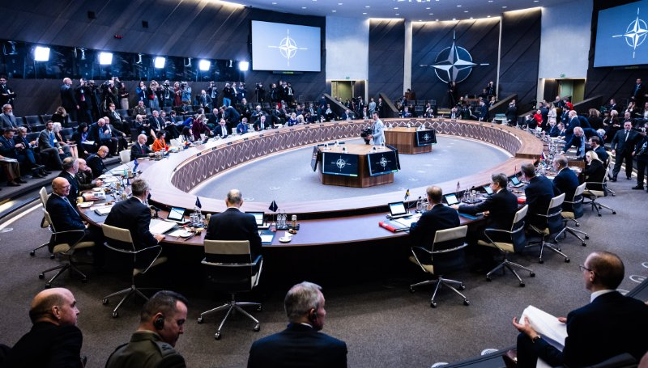

![NTK]()

Macron Told France's Own Political Rivals the Threat Was Real, Then Ordered the Government to Defend Power Plants and Tech Sites. On Friday, Macron gathered France's presidential hopefuls inside the Elysee Palace's crisis room, a room normally reserved for briefings too sensitive for a press conference (DW). The heads of France's foreign and domestic intelligence services, Nicolas Lerner and Celine Berthon, briefed the room directly (ABC Australia). Macron told reporters afterward that "the Russian hybrid threat against Europeans and against France has intensified," and ordered a plan to protect critical infrastructure, along with the "most sensitive" defense and technology sites, from drone and cyberattacks (DW). He added that any Russian attack on French soil "will not go unanswered," without saying what that answer would be (ABC Australia). Jordan Bardella, head of the far-right National Rally, sat in that room; Marine Le Pen, the party's presidential frontrunner, did not show up (ABC Australia).
The intention behind it is to intimidate us and to derail the effort to support the Ukrainians. The consequence will be the opposite.
Emmanuel Macron, president of FranceFrance was not describing an isolated incident. The drone strike that Germany blamed on Moscow last month at Leipzig Airport, the European Union said, bore "all the hallmarks of state-sponsored terrorism" (ABC Australia). That same week, a Russian drone hit a passenger train near the Ukraine-Poland border just after European diplomats, including former British and Swedish prime ministers, had used the same rail line leaving a Kyiv security conference (ABC Australia). Poland closed two airports and sounded air raid sirens in eastern schools this week after a Russian strike near its border with Ukraine (The Independent). Polish Prime Minister Donald Tusk told parliament the coming strikes would be framed as "accidental," built to weaken NATO's resolve to invoke its own collective defense clause (The Independent). Moscow answered Western support for Ukraine with its own instrument: it summoned Britain's charge d'affaires, Danae Dholakia, over UK arms shipments, and seized the Russian assets of Nestle, Auchan, Lemana Pro and FM Logistics, folding them into a new entity run by a Ministry of Interior general (Al Jazeera).
The sabotage campaign landed in France the same week its heating bills did. Macron is set to call an emergency G7 meeting as energy prices spike, with finance ministers in Dublin already alarmed at how the Middle East war is compounding pressure on European households before winter (Bloomberg).
Putin cast his own ballot from his office as that vote proceeded, framing a guaranteed result as proof of national unity behind the war (The Independent). For French voters watching gas prices climb and drones fall near their own infrastructure, Macron is betting they draw a straight line between the two before the first cold snap arrives.
Macron's emergency G7 meeting is the easy part; what happens after it is where the winter actually gets decided.
The G7 Meeting Will Produce a Statement on Energy Solidarity Within Days, Not a Price Cap. France's finance ministry will almost certainly get a joint communiqure out of the emergency session promising coordination on gas supply and possibly a review of the Russian sanctions regime, because that's what G7 statements do when a crisis is moving faster than policy. It will not produce a price cap or a subsidy mechanism that reaches French households before the first cold snap, since that requires legislation Macron doesn't have time or a majority to pass. The most likely outcome is that Bruno Le Maire's successors at the finance ministry buy themselves a headline and a few weeks, while the actual exposure, households facing higher bills going into an election year, sits untouched. Jordan Bardella and National Rally will use exactly that gap, pointing out that Macron convened intelligence chiefs and G7 leaders but couldn't lower a gas bill, in the next two weeks of French political coverage.
That argument only works if the sabotage campaign keeps supplying evidence for it, and Russia has given no sign of easing off.
Russia Will Escalate Hybrid Activity in at Least One More NATO Country Before Ukraine's Duma Election Results Are Finalized. Poland's fighter jets and Germany's Leipzig accusation were not a peak; they were a baseline. Tusk's own warning, that the next strikes will be framed as "accidental" specifically to avoid triggering NATO's Article 5 threshold, describes a mechanism still in motion, and Western intelligence officials already believe Putin is preparing to widen it (The Telegraph). The most likely target in the next two weeks is a Baltic or Polish site, chosen because both governments have already shown they'll close airspace and sound sirens rather than call Moscow's bluff, which is precisely the muted, deniable response Russia is testing for. If it lands in France instead, Macron's promise that an attack "will not go unanswered" gets tested for real, and he'll have to decide whether "answered" means a diplomatic protest or something with teeth.
That negotiating position is the third lever, and it moves on a slower clock than the sabotage does.
Kushner and Witkoff Will Return to Moscow Before Ukraine's Duma Results Are Certified, Pushing the Same Territorial Framework Zelensky Has Already Rejected. The Kremlin has already ruled out a Putin-Zelensky meeting at Trump's Doral resort in December, which means the near-term venue for pressure is Washington, not diplomacy on the ground. The most likely outcome is Trump using his own meeting with Xi Jinping next week to extract cover, not concessions, positioning China as a co-guarantor of any eventual deal while leaving Ukraine to make the actual territorial trade. Zelensky loses leverage every week the war economy squeezes harder and Europe's energy panic deepens, since a weary G7 is a G7 more likely to pressure Kyiv than Moscow.
Every door here opens off the same room: a French president who just told his own political rivals, on camera, that the sabotage is real and the answer is coming. That admission is the new fact on the table, and it changes what everyone else in Europe can now do.
Von der Leyen's NATO-Style Hybrid Mechanism Just Got a Test Case It Didn't Have Last Week. Ursula von der Leyen said the EU needed a system like NATO's collective defense clause, but built for attacks that fall below the threshold of war, and until Friday that was an argument without a client (DW). Now she has France, Germany and Poland all naming Russia in the same week, each with its own incident, Leipzig, the Ukraine-Poland rail line, the border jets, and a French president on record calling it one intensifying campaign rather than three unlucky accidents. That combination, three governments with fresh incidents plus a Commission president who already has the proposal drafted, is what makes a formal EU hybrid-response mechanism reachable in the next European Council session in a way it wasn't a month ago. The open question is whether Hungary and Slovakia, the two Carpathian Eight members who've refused Kyiv direct military aid, treat a hybrid-defense pact as solidarity or as another Brussels lever aimed at their own energy deals with Moscow.
That fight over who signs on is the second door, and it only exists because the first one opened.
A Hybrid Mechanism With Holdouts Hands Bardella a Talking Point Macron Just Built for Him. If von der Leyen's proposal moves and Budapest or Bratislava balks, the National Rally, sitting in Macron's own crisis room this week while Le Pen stayed away, gets to argue that the president who convened an emergency briefing on Russian sabotage can't even get fellow EU governments to agree on a joint defense against it. That argument lands harder than the gas-price critique already available to him, because it turns Macron's own evidence, the intelligence briefing, the Leipzig case, the seized French firms, into proof of European disunity rather than European resolve. Bardella doesn't need a new fact to make that case; he needs exactly the holdout Hungary and Slovakia are positioned to supply. This is the version of the adjacent possible that expands the wrong way: Macron's transparency this week becomes the evidence his rivals use against the EU project itself, if the mechanism stalls the way EU sanctions votes usually do.
There's a narrower, better door in the same room, one that doesn't require Budapest to change its mind at all.
France and Poland Can Build a Bilateral Response Faster Than Brussels Can Build a Consensus. Tusk has already deployed fighter jets and named the mechanism, accidental-looking strikes designed to avoid Article 5; Macron has already named the campaign and ordered infrastructure hardened. Neither needs Hungary's sign-off to share drone-detection assets, intelligence feeds or a joint public statement defining what counts as an attack requiring a response, since that's a bilateral or coalition-of-the-willing move, not a treaty amendment. This is the version of the adjacent possible that doesn't wait on the EU's slowest members: two governments that already agree on the diagnosis, moving on the strength of what they've each independently confirmed this week, before winter forces the argument anyway.
Putin needs the war to look like something other than what it is, and this week he had two different audiences to sell it to.
Putin Told Russians the Duma Vote Proves a United Country. It Proves Nothing of the Sort. Putin told the nation before the election that the results would "demonstrate that millions of people stand behind our fighters," casting a guaranteed outcome as evidence of organic support (The Independent). United Russia has held its majority for 23 years without ever facing a real opposition, which is not a description of a popularity contest. It is a description of a rigged one. The vote's inclusion of Donetsk, Luhansk, Zaporizhzhia, Kherson and Crimea does the same double duty: Moscow gets to point to ballots cast in occupied Ukrainian territory as proof those regions chose Russia, when Ukraine's foreign ministry says residents there are voting "at gunpoint" under an occupying army (The Independent). The people who benefit from this story are not the voters. They're the Kremlin officials who need a mandate to justify a war economy that Bloomberg's own reporting shows is hitting its limits, and a president who needs cover for a mobilization fear that's already circulating before the polls even close (The Independent). A state TV ad ran military commanders across the centuries into footage of troops holding a flag over a won battle, with the tagline that a vote for United Russia is "the strength of Russia." That's not an election ad. That's a recruitment poster wearing an election ad's clothes.
The second lie runs in the opposite direction, aimed at Europe instead of Russia, but it serves the identical purpose.
Putin Says the West Invented the "Mythical Russian Threat." The Rail Strike Landed Before the Sentence Did. Putin told the BRICS summit in New Delhi that Europe's governments "seek to frighten their populations with a mythical Russian threat," and insisted Russia poses no danger to its neighbors (Washington Post). A Russian drone hit passenger rail infrastructure in western Ukraine as Western officials, including David Petraeus, Boris Johnson and Carl Bildt, were using that same line to leave a security conference in Kyiv (Washington Post). German Defense Minister Boris Pistorius called it a calculated attempt to fuel fear, not a coincidence, and noted that Putin "knows that, and that is why he is doing it" (Washington Post).
What Vladimir Putin is doing is dangerous. He knows that, and that is why he is doing it.
Boris Pistorius, German defense ministerThe believers in Putin's version are not fools. They are Europeans exhausted by three years of war, watching energy bills climb, who would rather hear that the danger is exaggerated than confront a plan to hit their own power grid. That fear is exactly the market Marine Le Pen and AfD are courting, arguing for negotiations and sanctions relief in language that echoes Putin's own complaint about Europe's "globalist circles." The people who benefit from the denial are not the frightened voters. They are the man denying it, buying time to seize French firms, summon British diplomats and threaten "war" over peacekeepers, all while insisting he started none of it.